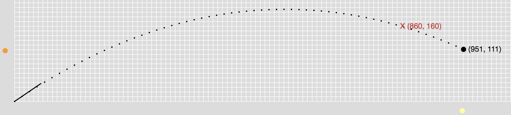

Pre-lab
Review the part of the lecture starting at 12:14 and lasting about 6 minutes: https://youtu.be/PjpLQS94lw4?start=734
Lab
In this lab you will study two-dimensional motion by accomplishing the following tasks:
- Adjust the angle and initial speed of a projectile in order to hit a target.
- Simplify two-dimensional motion as two independent one-dimensional movers.
To do this, complete the following steps:
- Run the simulation once with the default settings to get an idea of how it works, then read through all the instructions before actually starting any calculations to get a big-picture understanding of the lab.
- Your goal is to get the black ball, which is launched from the origin, to pass through the red "X." Calculate an angle (θ) and initial velocity (vi) that will accomplish this.
- Use the "-" and "+" buttons under "projectile (2D)" to adjust θ and vi for the black ball to the values you just calculated. Run the simulation to confirm the ball passes through the "X."
- Next, you want the yellow ball to be the "shadow" of the black ball such that the yellow ball is always directly below the black one. Do this by adjusting the acceleration and initial velocity of the yellow ball under "horizontal 1D." Set the values to be equal to the x-components of the black ball's initial velocity and acceleration.
- Similarly, you want the orange ball to always be at the same height as the black ball. Do this by adjusting the acceleration and initial velocity of the orange ball under "vertical 1D." Set the values to be equal to the y-components of the black ball's initial velocity and acceleration.
- Your end result should look something like the example below. Include a screenshot in your lab report.

Additional information and comments:
- The gravitational acceleration of the projectile in this simulation has magnitude 0.3 p/f^2
- Avoid refreshing your browser or else the red "X" will move (its location is randomized to discourage copying)
- No guess and check; calculate!
- Show detailed calculations with explainations, not merely a screenshot of your scratch paper
- The simulation is unlikely to work on a cell phone, so please use a proper computer.
- Start the simulation by clicking the green button in the bottom left. The blue button will pause and the red button will reset. The purple buttons in the bottom-center allow you to go one frame at a time either forwards (right button) or backwards (left button).
- Time is measured in frames (see top-center of the screen) and distance is measured in pixels; no need to do any unit conversion, just use frames and pixels throughout (so velocity, for example, is measured in pixels per frame).